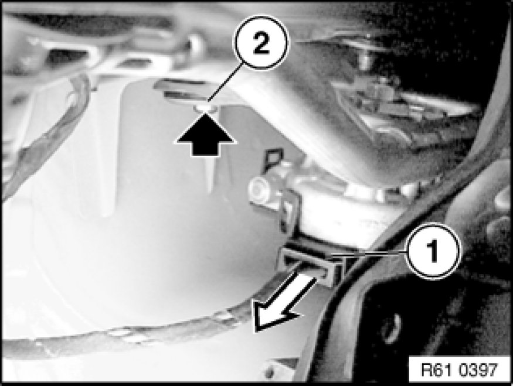
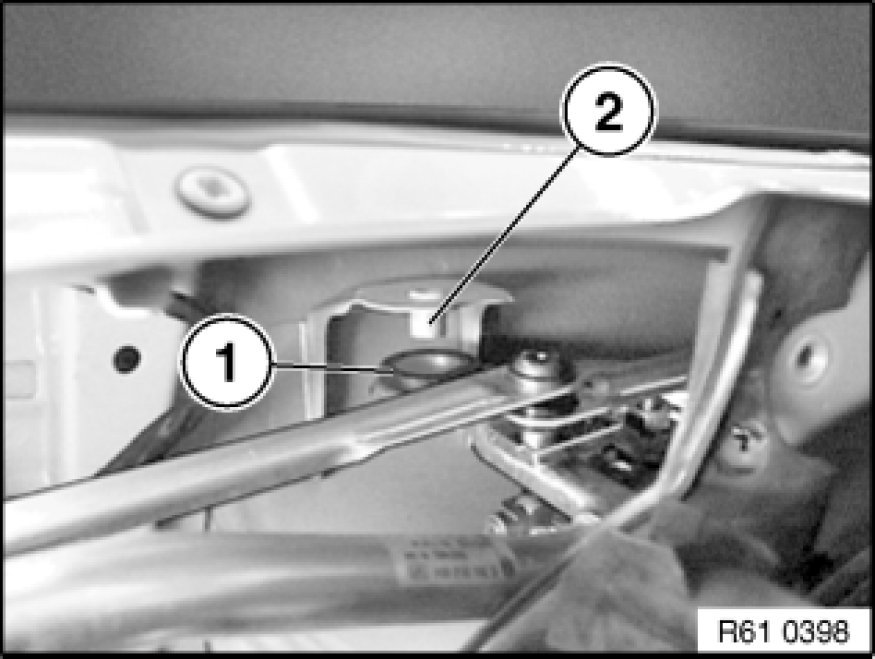
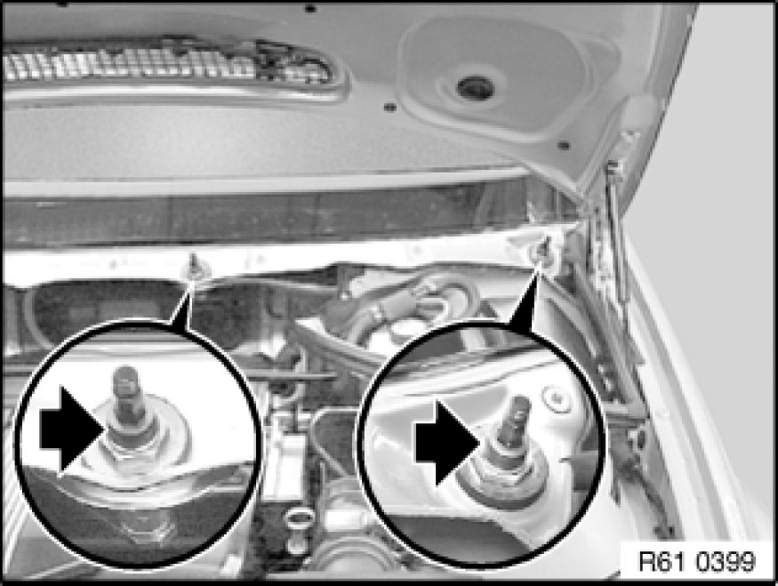

Removing and Installing Complete Wiper Console
61 61 270 - Removing and installing complete wiper console

Necessary preliminary tasks:
- Remove cowl panel cover 51 13 115 Removing And Installing/Replacing Cowl Panel Cover.
- Remove heater bulkhead 51 71 080 Removing and Installing/Replacing Heater Bulkhead.

Unfasten plug connection (1) and disconnect.
Unscrew bolt (2).
Installation Note:
Tightening torque 61 61 6AZ 61 61 Windshield Wipers.

Installation Note:
Fit rubber grommet (1) of wiper console on pin (2).

Release nuts and feed out complete wiper console through opening in heater bulkhead.
Installation Note:
Tightening torque 61 61 5AZ 61 61 Windshield Wipers.